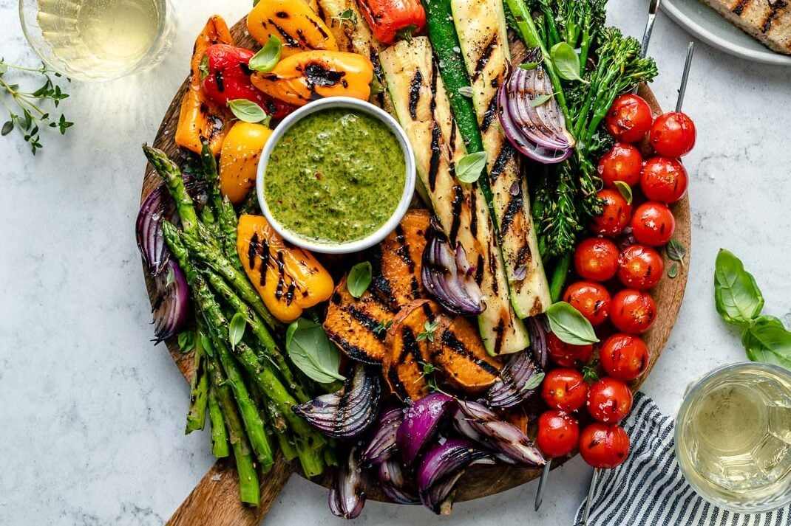
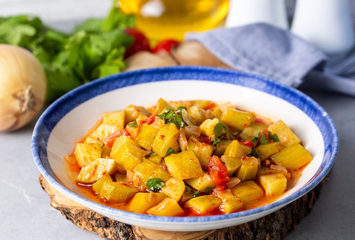
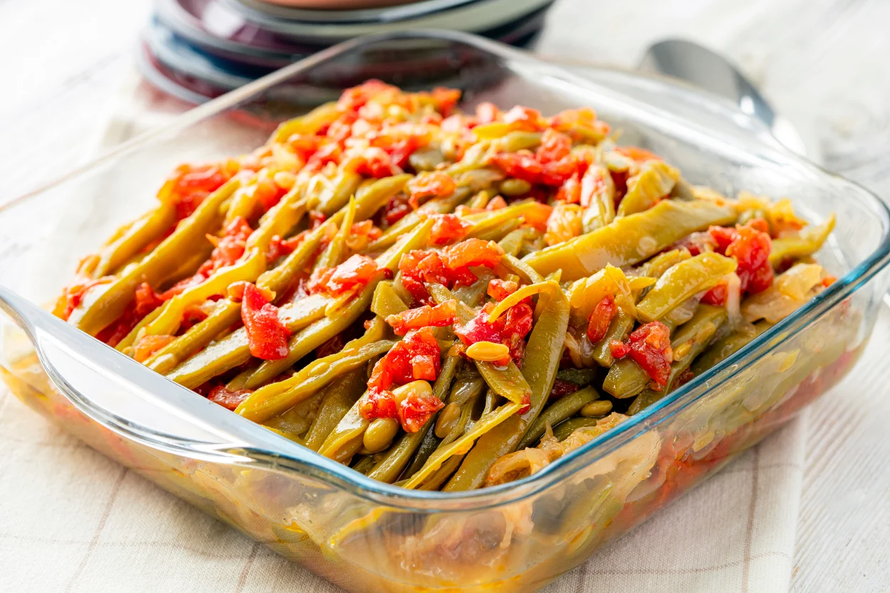

Grilled Vegetable Platter
Enjoy this colorful and flavorful grilled vegetable platter, perfect for a summer BBQ or as a healthy side dish
any time of the year.
-
Preparation time
- Total: Approximately 30 minutes
- Preparation: 15 minutes
- Cooking: 15 minutes
-
Ingredients
- 2 zucchinis, sliced lengthwise
- 2 yellow squashes, sliced lengthwise
- 1 large red bell pepper, seeded and quartered
- 1 large yellow bell pepper, seeded and quartered
- 1 large red onion, sliced into thick rounds
- 8-10 asparagus spears, woody ends trimmed
- 2 tablespoons olive oil
- 2 cloves garlic, minced
- 1 teaspoon dried thyme
- Salt and pepper to taste
-
Instructions
-
Preheat your grill to medium-high heat.
-
In a small bowl, mix together the olive oil, minced garlic, dried thyme, salt, and pepper.
-
Brush the sliced vegetables with the olive oil mixture on both sides.
-
Place the vegetables on the grill and cook for about 5-7 minutes per side, or until they are tender and have grill marks.
-
Once cooked, arrange the grilled vegetables on a platter and serve immediately.
Nutrition
The table below shows nutritional values per serving.
Calories
|
150kcal
|
Carbs
|
10g
|
Protein
|
2g
|
Fat
|
12g
|
Stuffed Eggplant (İmam Bayıldı)
İmam Bayıldı is a traditional Turkish dish consisting of eggplants stuffed with a mixture of onions, tomatoes, peppers, and garlic, then baked to perfection. Soft and aromatic eggplants complement the flavorful filling, creating a delicious meal.
-
Preparation Time
- Total: Approximately 1 hour 30 minutes
- Preparation: 30 minutes
- Cooking: 1 hour
-
Ingredients
- 4 medium-sized eggplants
- 2 medium-sized tomatoes, diced
- 3 green bell peppers, diced
- 3 banana peppers, diced
- 2 large onions, diced
- 4 cloves garlic, minced
- 1/2 bunch fresh parsley, chopped
- 1/4 cup olive oil
- 1 teaspoon granulated sugar
- Salt and black pepper
-
Instructions
-
Preheat the oven to 200°C (400°F).
-
Score the eggplants and place them on a baking sheet. Bake for about 30-40 minutes until the eggplants are soft and collapsed.
-
Remove the cooked eggplants and let them cool. Once cooled, make a slit in the center of each eggplant and scoop out the flesh with a spoon, leaving a shell.
-
In a large skillet, heat olive oil over medium heat. Add diced onions and minced garlic, and cook until softened.
-
Add diced peppers and tomatoes to the skillet. Cook until the vegetables are softened and most of the liquid has evaporated.
-
Season the mixture with salt, black pepper, and sugar. Stir well to combine.
-
Place the hollowed eggplants in a baking dish and fill them with the vegetable mixture.
-
Drizzle some olive oil over the eggplants and bake in a preheated oven at 180°C (350°F) for about 25-30 minutes.
-
Once done, garnish with chopped fresh parsley and serve warm or cold.
-
Enjoy your İmam Bayıldı!

Zucchini Stew
Zucchini stew is a comforting and flavorful dish that celebrates the natural sweetness of zucchini. This hearty stew is packed with tender zucchini, tomatoes, onions, and herbs, simmered to perfection for a delicious and satisfying meal.
-
Preparation Time
- Total: Approximately 40 minutes
- Preparation: 15 minutes
- Cooking: 25 minutes
-
Ingredients
- 4 medium zucchinis, sliced
- 1 onion, diced
- 2 cloves garlic, minced
- 2 tomatoes, chopped
- 1 tablespoon olive oil
- 1 teaspoon dried oregano
- 1 teaspoon dried basil
- 1/2 teaspoon paprika
- Salt and pepper to taste
- 2 cups vegetable broth
- Fresh parsley for garnish (optional)
-
Instructions
-
In a large pot or Dutch oven, heat the olive oil over medium heat. Add the diced onion and minced garlic, and cook until softened and fragrant, about 3-4 minutes.
-
Add the sliced zucchini to the pot, along with the chopped tomatoes, dried oregano, dried basil, paprika, salt, and pepper. Stir to combine.
-
Pour in the vegetable broth and bring the mixture to a simmer. Reduce the heat to low, cover, and let the stew simmer for about 20-25 minutes, or until the zucchini is tender and the flavors have melded together.
-
Taste and adjust the seasoning if needed. If the stew is too thick, you can add more vegetable broth or water to reach your desired consistency.
-
Once done, remove from heat and garnish with fresh parsley if desired. Serve hot and enjoy your delicious zucchini stew!

Turkish Green Beans with Olive Oil (Zeytinyağlı Fasulye)
Zeytinyağlı fasulye is a classic Turkish dish made with green beans cooked in olive oil, tomatoes, and onions. It’s a light, healthy, and flavorful dish typically served cold or at room temperature.
-
Preparation time
- Total: Approximately 1 hour 15 minutes
- Preparation: 15 minutes
- Cooking: 1 hour
-
Ingredients
- 1 lb (500g) fresh green beans, trimmed and cut into 2-inch pieces
- 1/2 cup olive oil
- 1 large onion, finely chopped
- 2 cloves garlic, minced
- 4 tomatoes, peeled and diced
- 1 tablespoon tomato paste
- 1 teaspoon sugar
- Salt and pepper to taste
- 1 cup water
- Juice of 1 lemon
- Fresh dill or parsley, chopped (for garnish)
-
Instructions
-
Heat the olive oil in a large pot over medium heat. Add the chopped onion and cook until soft and translucent, about 5-6 minutes.
-
Add the minced garlic and cook for another minute, stirring frequently.
-
Stir in the diced tomatoes and tomato paste. Cook for about 5 minutes until the tomatoes begin to soften.
-
Add the green beans to the pot and stir to combine. Add the sugar, salt, and pepper.
-
Pour in the water and bring the mixture to a boil. Reduce the heat to low, cover, and simmer for about 45-60 minutes, or until the green beans are tender and fully cooked.
-
Once the beans are cooked, remove from heat and stir in the lemon juice.
-
Allow the dish to cool to room temperature, then transfer it to a serving dish. Garnish with fresh dill or parsley.
-
Serve the Zeytinyağlı Fasulye at room temperature or chilled. Enjoy!
Nutrition
The table below shows nutritional values per serving.
| Calories |
180 kcal |
| Carbohydrates |
15g |
| Protein |
3g |
| Fat |
12g |
Ratatouille
Ratatouille is a traditional French Provençal stewed vegetable dish, originating in Nice. It is typically made with zucchini, eggplant, bell peppers, onions, tomatoes, and seasoned with garlic, herbs, and olive oil.
-
Preparation time
- Total: Approximately 1 hour 30 minutes
- Preparation: 30 minutes
- Cooking: 1 hour
-
Ingredients
- 1 large eggplant, cubed
- 2 zucchinis, sliced
- 1 large onion, sliced
- 2 bell peppers (red and yellow), sliced
- 4 tomatoes, diced
- 4 cloves garlic, minced
- 2 tablespoons olive oil
- 1 tablespoon tomato paste
- 1 teaspoon dried thyme
- 1 teaspoon dried oregano
- Salt and pepper to taste
- Fresh basil leaves, chopped (for garnish)
-
Instructions
-
Preheat the oven to 375°F (190°C).
-
In a large bowl, toss the eggplant cubes with 1 tablespoon of olive oil, salt, and pepper. Spread them out in a single layer on a baking sheet lined with parchment paper. Roast in the preheated oven for 20 minutes, or until softened and lightly browned.
-
In a large skillet, heat the remaining tablespoon of olive oil over medium heat. Add the sliced onion and bell peppers. Cook, stirring occasionally, until softened, about 8-10 minutes.
-
Add the minced garlic to the skillet and cook for another minute, until fragrant.
-
Stir in the diced tomatoes, tomato paste, dried thyme, and dried oregano. Season with salt and pepper to taste. Cook for 5-7 minutes, until the tomatoes begin to break down and the sauce thickens slightly.
-
Add the roasted eggplant and sliced zucchinis to the skillet. Stir to combine and coat the vegetables with the sauce. Cover and simmer for 20-30 minutes, stirring occasionally, until all the vegetables are tender.
-
Adjust seasoning if necessary. Serve the ratatouille hot or at room temperature, garnished with chopped fresh basil leaves.
Nutrition
The table below shows nutritional values per serving.
| Calories |
150 kcal |
| Carbohydrates |
20g |
| Protein |
5g |
| Fat |
7g |